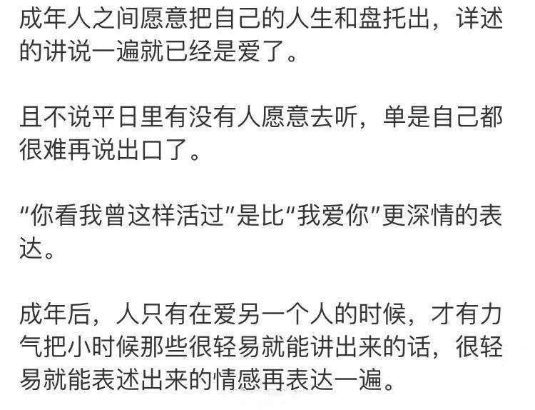

现在刚懂这些话的意思。创造才是拯救的最终出路。@庆山-安妮宝贝:也许应该承认，“夏摩山谷”不仅仅让我在写完之后病了一场，还在出版之后，让我颓废很长时间。这本书像付出了过于赤诚的心力并且得到圆满的恋爱。经历过这样的恋爱的人，也许知道这种不知该如何重新开始的颓废感。强烈的内心满足，会让人甘愿平淡，因为它实现了某种自我完成。但我知道必须要收拾心情，重新上路了。要珍惜时间。
#不明所以# 美国商人看到印第安人做的工艺品不错，想让酋长多生产些，他可以大量收购。不料酋长要的批发价比单个卖还要高，因为重复做同样工艺品，部落民的痛苦会提高。我最开始听到这个笑话的印象，是印第安人果然没进化好，所以只能留在原始社会状态里。现在倒是觉得印第安人的认识没错，做单个工艺品是创作，是快乐的事情，但重复做，就是劳作，就是不得不，就是痛苦的事情。人有创造的天性，这个天性被压抑过久的话，人大概会机器化，会麻木，会成为僵尸一样的人。避免这个趋势的途径，也许是艺术。
启发很大，一直舍不得分享//@钟锦璐:总结得很对@Ada李力:#不明所以# 跟某创业朋友电话里长长聊过，第一次近距离理解了宗教信仰对人的作用。朋友说初创业时，对自己产品极度狂热而且带着这种态度去做推广，客户有很多质疑也就罢了，员工也不是很支持，她也听到很多同行和伙伴的背后议论。这时候她倒是越挫越勇，因为她坚信两点：1，她做的是对客户有益的事情，上帝相信她在做对的事情。2，上帝是爱她的，也只有上帝能评判她，所以其他人的各种议论，她都可以不放在心上。朋友这种阐述，比我读任何圣经故事，都让我对上帝理解深刻了许多，只是我仍是无神论者。朋友后来加的注解更有意思。她医学专业，曾做过精神科大夫，说之前的几个同事，现在都有宗教信仰：她信上帝，某同事信佛，某同事信仁波切。姣姣听到这个转述也爆笑，她问我：你将来会信上帝吗？我回：应该不会。
MARK//@凝碧的波痕:作为一个女权主义者+汉语教师，尤其应该注意避免语言中的性别歧视。网络上很多女权主义者强调“女士”、詈语改为“去他爹的”、指称女性弃“她”用“他”，其实都是一种语言上的努力。这篇很值得一看，也很值得深思！@联合国妇女署:【性别包容性语言使用指南】#平等的一代# 日常生活中，怎样的表达是具有性别包容性的？👉点击链接，参考阅读完整的“性别包容性语言指南” ，一起使用平等尊重所有性别的语言表达吧 🔗 网页链接
绝望到底的孤独时，才会格外珍惜那些普通脆弱但真实的连接吧。//@爱玛_1993://@孤独者在远方:就好比什么时候能遇到良人，细数从前巴山夜雨的夜晚，絮絮私语//@相対終焉 : 我也是存了别人的图。就是觉得过于感同身受，悲从中来罢了@相対終焉:分享图片 
@钟锦璐 //@彩虹天: 这几年发现朋友圈里那些独立自信事业成功的女性都是有信仰的。每天看着她们容光焕发，或者努力工作享受成果，然后感谢上主。其中有一位说：我努力工作生活，是为了让别人看到我所依赖的那位有多么伟大。还有一位说：因为他创造了如此美丽的我，以及给了我才华，我不应当隐藏@Ada李力:#不明所以# 跟某创业朋友电话里长长聊过，第一次近距离理解了宗教信仰对人的作用。朋友说初创业时，对自己产品极度狂热而且带着这种态度去做推广，客户有很多质疑也就罢了，员工也不是很支持，她也听到很多同行和伙伴的背后议论。这时候她倒是越挫越勇，因为她坚信两点：1，她做的是对客户有益的事情，上帝相信她在做对的事情。2，上帝是爱她的，也只有上帝能评判她，所以其他人的各种议论，她都可以不放在心上。朋友这种阐述，比我读任何圣经故事，都让我对上帝理解深刻了许多，只是我仍是无神论者。朋友后来加的注解更有意思。她医学专业，曾做过精神科大夫，说之前的几个同事，现在都有宗教信仰：她信上帝，某同事信佛，某同事信仁波切。姣姣听到这个转述也爆笑，她问我：你将来会信上帝吗？我回：应该不会。
#不明所以# 我现在知道为什么会喜欢看20多岁孩子们创作的玄幻剧了，即使很多情节胡编乱造，逻辑不同，玛丽苏或者汤姆苏得可笑，但是他们能写出很多闪耀着光芒的角色，那种吸引人，会让你迷恋上的角色和对应的世界。因为他们还能自己幻想，但我已经不会了，所以我只能去看他们的幻想。只是，不知道是我这个中年人更幸运呢，还是他们更幸运。我还是能从这些角色和虚拟世界里感受到喜悦，同时也不再对现实抱太大希望。而他们，因为年轻和拥有时间，还有把幻想变成现实的憧憬。嗯，成长就是个不断被锤的过程吧。一代代就是这样重复。只是，他们的幻想比我年轻时高级，这让人对这个世界还怀有些希望。